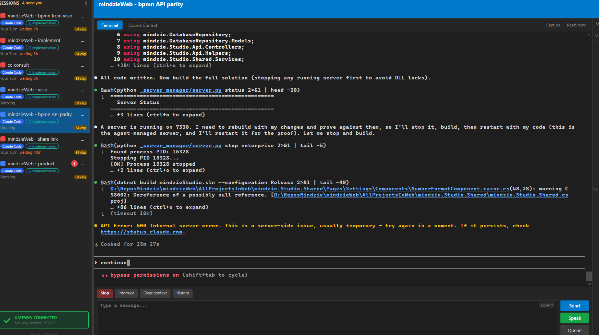

Developer Agent proof Branch issue-476-auto-resume-transient.
I believe this is finished.
TransientErrorSignatures): a pure,
case-insensitive scan of a Claude Code session's resolved terminal grid for the transient
Anthropic signatures (HTTP 500 "Internal server error ... usually temporary", 529 "Overloaded",
"try again in a moment"), with a hard veto on terminal signatures (invalid key, auth,
quota/billing, malformed). A terminal error is never classified retryable - fail closed.TransientErrorAutoResume + the pure decision core
AutoResumeLoop): on detecting a transient error it submits a "Please continue."
nudge after the first-retry delay, then on the steady interval, until the error clears
(recovery) or a give-up bound is hit. Per-session, on the live terminal buffer.AutoResumeConfig, config.json
auto_resume section in the style of autoUpdate): keys
enabled (default false), first_retry_seconds (60),
interval_seconds (300), max_attempts (12),
max_elapsed_minutes (120). Honors the human decision on assumption A-3.WingmanActionExecutor.Execute (Wingman charter invariant 7). The charter
(WINGMAN.md) and the charter-audit test were updated to permit this ONE approved, gated,
default-OFF self-actuator (invariant 8 amendment).[TransientErrorAutoResume]).ControlApiHost.StartSessionStateServices (start) and disposed on stop.| Assumption | Decision |
|---|---|
| A-1 interval | First retry 60s (sooner, errors are usually temporary), then every 300s. Configurable. |
| A-2 what "continue" sends | A single submitted line "Please continue." (type + Enter via the executor). Minimal nudge; resumes the interrupted turn without re-running a partially-done action. |
| A-3 write action / default | Approved (human). Default OFF (opt-in). Live Director logs enabled=False by default. |
| A-4 signatures | Transient: 500 "usually temporary", 529, "overloaded", "try again in a moment". Terminal veto: invalid key, auth, quota/billing, malformed, 400/401/403. |
| A-6 give-up bound | 12 attempts OR 120 minutes elapsed, whichever first. On give-up the session is flagged red "needs you". |
| A-8 UI surface | Shipped config.json setting (default OFF) + detection/scheduler. Avalonia Settings toggle noted as a small follow-up; the setting is reachable via config.json regardless. |
| # | Criterion | How proven | Result |
|---|---|---|---|
| 1 | Verbatim 500 string => classified transient (log names session id + state) | Unit: TransientErrorSignaturesTests.IsRetryableTransient_Verbatim500Message_True; trace line "state=TRANSIENT-ERROR detected" with session id (auto-resume-log-trace.txt) | PASS |
| 2 | After detection, no user action, auto-continue once the interval elapses | Integration: TransientError_WithSettingOn_AutoContinuesViaExecutor records a real submit actuation; trace shows AUTO-CONTINUE attempt=1 at +60s | PASS |
| 3 | Retries repeat on the configured interval (timestamps ~1 interval apart) | Trace auto-resume-log-trace.txt: attempts 1..12 spaced exactly 300s apart; unit OnRetryDue_RepeatsOnIntervalWhileErrorPersists | PASS |
| 4 | On recovery (output resumes) the retry loop stops | Unit OnScreenScan_ErrorCleared_RecoversAndStops / OnRetryDue_ErrorClearedAtFireTime_Recovers; trace Scenario A "state=RECOVERED ... stopping retry loop" | PASS |
| 5 | Give-up bound; then stop and flag session needs-you | Unit OnRetryDue_MaxAttemptsReached_GivesUp / OnRetryDue_MaxElapsedReached_GivesUpBeforeMaxAttempts; trace Scenario B "GAVE-UP after 12 attempt(s) ... flagging session needs-you (red)"; code sets red via SetStatusColor(Red, PositiveEvidence) | PASS |
| 6 | Setting OFF => zero auto-retry attempts | Integration TransientError_WithSettingOff_ZeroAutoContinues (zero recorded actuations); config default-OFF proven by AutoResumeConfigTests.Get_NoConfig_DefaultsDisabled and live boot enabled=False; trace Scenario C | PASS |
| 7 | Non-transient error (invalid key/auth) => no auto-retry | Integration NonTransientError_WithSettingOn_ZeroAutoContinues; unit IsRetryableTransient_TerminalError_False and the veto test | PASS |
Field evidence referenced in the issue (the verbatim 500 at the bottom of a stalled session):

Produced by the shipped decision core (AutoResumeLoop) under a fixed clock at the
default config, so the spacing is exact rather than wall-clock-flaky. Full file:
auto-resume-log-trace.txt. Excerpt (Scenario A - retries then recovery):
2026-06-21 13:30:11Z [TransientErrorAutoResume] session=...555 terminal shows: "API Error: 500 Internal server error. This is a server-side issue, usually temporary" 2026-06-21 13:30:11Z [TransientErrorAutoResume] session=...555 state=TRANSIENT-ERROR detected; auto-resume armed, first continue in 60s 2026-06-21 13:31:11Z [TransientErrorAutoResume] session=...555 AUTO-CONTINUE attempt=1/12 performed=true status=ok (submitted "Please continue.") 2026-06-21 13:36:11Z [TransientErrorAutoResume] session=...555 AUTO-CONTINUE attempt=2/12 performed=true status=ok (submitted "Please continue.") 2026-06-21 13:41:11Z [TransientErrorAutoResume] session=...555 state=RECOVERED after 2 auto-continue attempt(s); stopping retry loop
2026-06-21 14:37:11Z [TransientErrorAutoResume] session=...555 AUTO-CONTINUE attempt=12/12 performed=true status=ok (submitted "Please continue.") 2026-06-21 14:42:11Z [TransientErrorAutoResume] session=...555 GAVE-UP after 12 attempt(s), 61.0min; flagging session needs-you (red)
Live Director (this PR's build, slot 13) at boot. Full file: live-director-startup.txt.
Boot 1 (default config, no auto_resume section): 2026-06-21 17:26:23.695 [TransientErrorAutoResume] Start (enabled=False, firstRetry=60s, interval=300s, maxAttempts=12, maxElapsed=120min) Boot 2 (config.json auto_resume.enabled=true): 2026-06-21 17:27:34.221 [TransientErrorAutoResume] Start (enabled=True, firstRetry=60s, interval=300s, maxAttempts=12, maxElapsed=120min)
OFF => zero retries is proven by the integration test (zero recorded actuations with the verbatim 500 on screen and the setting OFF) and trace Scenario C.
enabled=true ONLY to capture
Boot 2, then restored byte-identical (verified by diff). The user's config is unchanged.New Wingman component TransientErrorAutoResume takes a Director-driven write action -
the one approved exception to Wingman charter invariant 8 ("the Wingman never acts on its own").
Updated in the same change: docs/wingman/WINGMAN.md (invariant 8 amendment + new section
5c), and the charter-audit test WingmanCharterAuditTests (allow-lists the one approved
self-actuator). Invariants 1-7 are preserved: no model call in detection, the single write chokepoint
still holds, and the action is gated default-OFF. No architecture_manifest or security_profile drift
(the affected containers - CcDirector.Core Wingman, ControlApiHost wiring, config.json - already exist).
TransientErrorSignaturesTests - transient match / terminal veto / no-error.AutoResumeLoopTests - cadence, recovery, give-up (attempts & elapsed), OFF.AutoResumeConfigTests - default OFF, full section, wrong-type throws.TransientErrorAutoResumeIntegrationTests - live pipeline: actuation ON, zero OFF, zero non-transient.WingmanCharterAuditTests - still green with the amended invariant 8.Full CcDirector.Core.Tests suite: 2257 passed, 6 skipped, 0 failed. Solution builds clean (0 warnings, 0 errors).